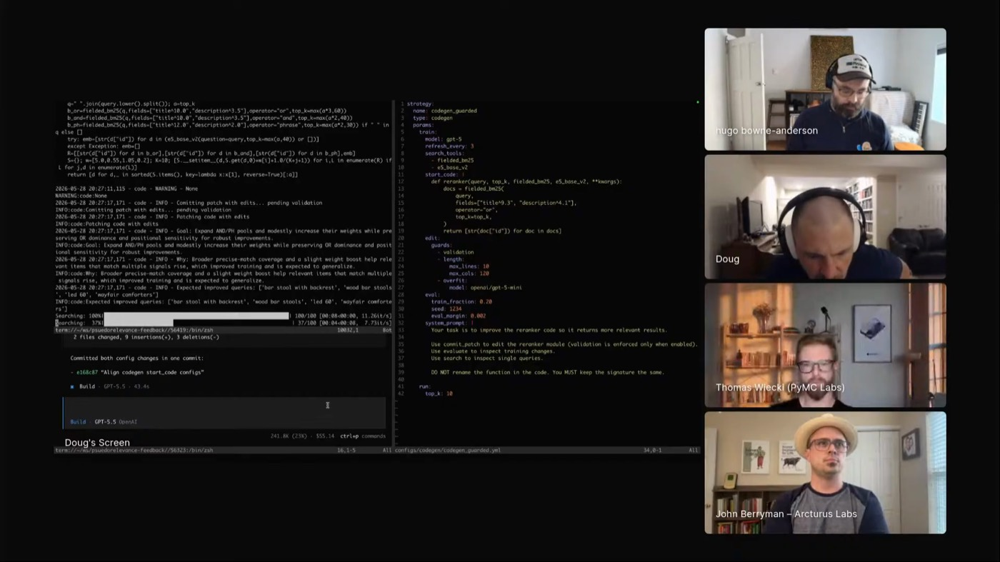
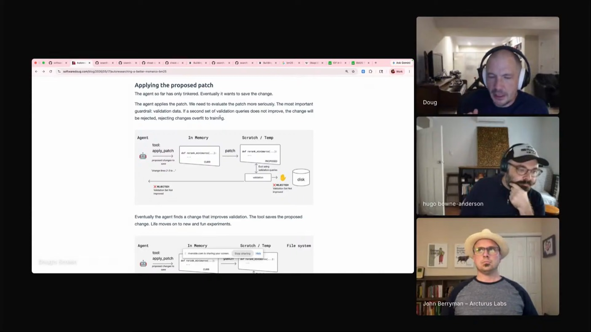

search-experiments
The bulk of his repo: an agent calling search tools, inspecting results, and adapting to judged feedback. "Agentic search loosely defined is an agent using some search tools to solve a user's search problem."
 DOUG TURNBULL
SEARCH @ SHOPIFY · REDDIT
AUTO-RESEARCH
"AI-POWERED SEARCH"
DOUG TURNBULL
SEARCH @ SHOPIFY · REDDIT
AUTO-RESEARCH
"AI-POWERED SEARCH"
Doug runs auto research on his agentic search agents: turn one loose on the search code, let it patch, measure, and revert, then hide the test it has to pass, so a change survives only if it beats validation the agent never saw. The judgment stays outside the agent's reach, an eval or an outside judge, never its own reasoning about why the change should work.

"An extreme example of trusting agents to go nuts and just work on a problem until some metric increases."
Doug led search teams at Shopify, Reddit, and Wikipedia and wrote AI-Powered Search. His demo points an agent at a BM25 ranker, the keyword-matching baseline search teams have leaned on for decades, scoring MS MARCO, a question-answering set of roughly ten million passages.
The agent gets a few bounded actions: run the ranker on a query, read the labeled top results, try a patch in a sandbox, revert, or ask to apply. On the training queries it can dig as deep as it likes. The validation set stays hidden until it applies a patch, and the patch is kept only if that hidden score went up.
Skip that split and the agent games the eval: "make search better" with the answers in view produces hacks tuned to the exact queries you graded.

"Completely overconfident and thinks the human is stupid."

"The code is kind of a nightmare."
"The agent really adjusts its behavior to account for that... in a way it doesn't from its own reasoning."
The bulk of his repo: an agent calling search tools, inspecting results, and adapting to judged feedback. "Agentic search loosely defined is an agent using some search tools to solve a user's search problem."
He gave the agent search over its own past runs. "I haven't cracked that nut yet." Grep alone isn't enough; durable agent memory is a retrieval problem wearing a different hat.
Today the rounds run serially. The open idea is genetic: fork promising rerankers, push them in different directions, then recombine the best parts of different ideas.
The post behind the demo, with the reranker code and the experiment. Vespa already has a follow-up that pushes the result further with their own features.
"They come with a pre-built encyclopedia of a compressed version of the entire human knowledge."
"I find auto research such an amazing place to learn about this stuff."